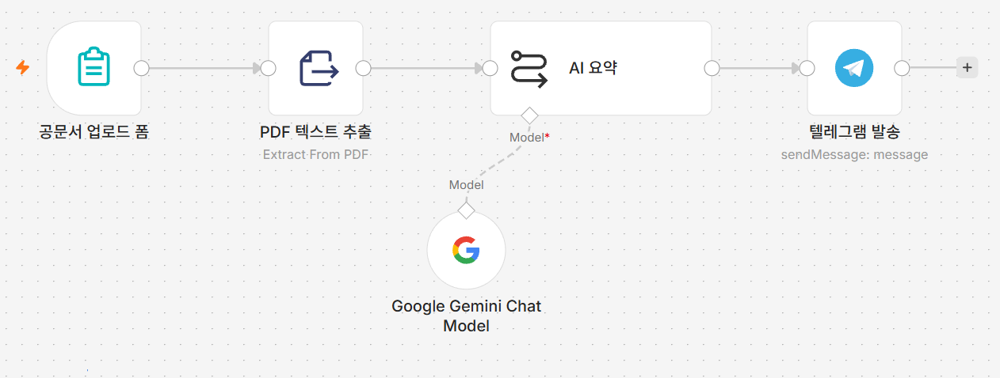
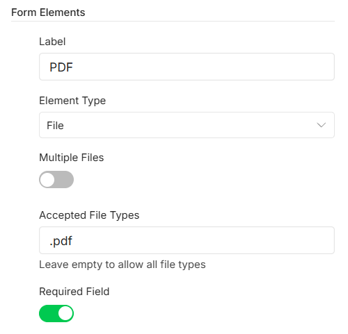
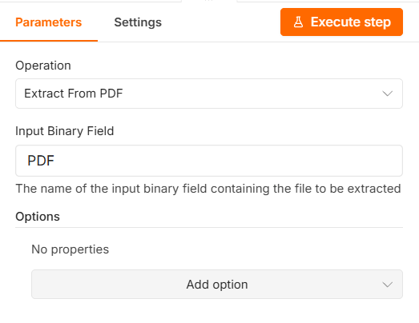
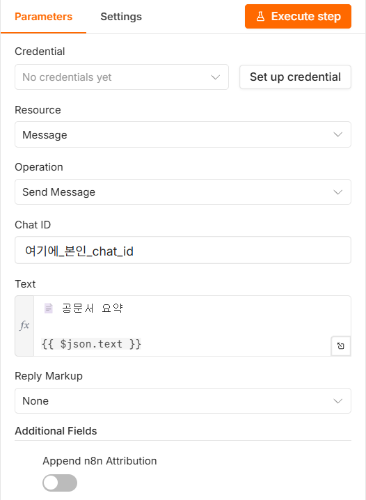
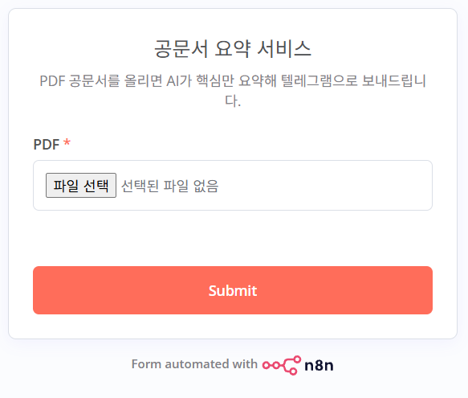

P1 공문서 요약 서비스
PDF를 올리면 요약을 보내줍니다
왜 이게 필요한가
아침에 출근해서 메일함을 열면 첨부 공문이 대여섯 건씩 와 있습니다. 대부분은 우리 부서와 상관없는 협조 공문이거나, 이미 알고 있는 사업의 후속 안내입니다. 그런데 열어보기 전에는 어느 쪽인지 알 수가 없습니다. 결국 한 건씩 열어 스크롤을 내리며 목적과 대상, 일정만 눈으로 훑게 됩니다. 한 건에 3~5분, 하루 20분이 여기에 들어갑니다.
공문을 대신 읽어주는 사람이 있으면 좋겠지만 그럴 수는 없습니다. 대신 "목적·주요 내용·지원 사항·대상·일정 다섯 줄만 뽑아서 알려줘"라고 시켜둘 수는 있습니다. 이번에 만드는 것이 그것입니다. PDF를 올려두면 몇 초 뒤 휴대폰 텔레그램으로 다섯 줄 요약이 도착합니다. 그 다섯 줄을 보고 지금 열어볼 공문인지 나중에 볼 공문인지만 판단하면 됩니다.
이번 시간에 만들 것
폼에 PDF 공문서를 올리면 텍스트를 뽑아내 AI가 다섯 줄로 요약한 뒤 텔레그램으로 보내주는 독립 프로젝트를 만듭니다. 1일차와 달리 처음부터 새로 만드는 워크플로우입니다.
공문서 업로드 폼 → PDF 텍스트 추출 → AI 요약 → 텔레그램 발송
갈라지는 곳 없이 일직선으로 이어 붙입니다. 각 노드가 앞 노드의 결과를 그대로 받아 다음 일을 하기 때문입니다. 폼은 파일을 주고, 추출 노드는 그 파일에서 글자를 뽑고, AI는 그 글자를 요약합니다.
노드는 넷인데 그림에는 다섯 개가 보입니다.
Google Gemini Chat Model만 옆으로 이어지지 않고
AI 요약 아래쪽에 점선으로 매달려 있습니다.
1일차 06강에서 본 그 모양 그대로입니다 — 점선 옆
Model이 "이 노드가 모델 자리에 꽂혀 있다"는 표시입니다.
따라하기
- 새 워크플로우 만들기
n8n 워크플로우 목록 화면에서 새 워크플로우를 만들고, 왼쪽 위 이름을 눌러
P1 공문서 요약 서비스로 바꿉니다. 1일차에 만든 워크플로우는 건드리지 않습니다. 2일차 네 프로젝트는 각각 별개의 워크플로우입니다. - 폼 트리거 추가하기
빈 캔버스 가운데의
+를 눌러On form submission과 비슷한 문구의 폼 트리거를 고릅니다. 1일차 08강에서 쓴 것과 같은 노드입니다.노드가 열리면 아래 두 칸을 채웁니다.
Form Title→공문서 요약 서비스
Form Description→PDF 공문서를 올리면 AI가 핵심만 요약해 텔레그램으로 보내드립니다. - 파일 업로드 칸 만들기
아래로 내려가
Form Fields에서 입력 칸을 하나 추가합니다. 칸이 열리면Form Elements라는 제목 아래로 설정 항목이 줄줄이 나타납니다. 화면에 보이는 순서대로 아래와 같이 맞춥니다.이름(
Label) →PDF
입력 형태(Element Type) →File
여러 파일 허용(Multiple Files) → 끕니다(회색)
허용 확장자(Accepted File Types) →.pdf
필수(Required Field) → 켭니다(초록색)Element Type을File로 바꾸기 전에는Multiple Files·Accepted File Types두 칸이 아예 보이지 않습니다. 안 보인다면 순서가 아직 안 온 것이니File부터 고르세요.이름은 반드시PDF세 글자로 한글로공문서 업로드같은 이름을 지으면 안 되는 이유가 있습니다. n8n은 파일이 담기는 자리의 이름을 이Label에서 그대로 가져다 쓰는데, 영문과 숫자가 아닌 글자는 전부 밑줄(_)로 바꿔버립니다. 예를 들어 이름을공문서 PDF 업로드로 지으면 파일이 담기는 자리의 이름은____PDF____가 됩니다. 다음 단계에서 이 이름을 손으로 적어 넣어야 하는데, 이런 이름은 알아낼 방법이 없습니다.이름을
PDF로 지으면 파일이 담기는 자리의 이름도 그냥PDF가 됩니다. 폼 위쪽 설명글에 한글로 안내가 나가므로 민원인이 헷갈릴 일은 없습니다.[그림 P1-2]Label·Element Type·Accepted File Types를 채우고 스위치 두 개를 맞춘 모습
- PDF에서 글자 뽑아내기
폼 트리거 오른쪽
+를 누르고Extract from File을 고릅니다. 동작 목록에서Extract From PDF를 고릅니다. 노드가 열리면 맨 위Operation이Extract From PDF로 되어 있는지 다시 한 번 확인합니다.그 아래
앞 단계에서 필드 이름을Input Binary Field칸에PDF를 입력합니다. 이 칸은 기본값이data로 채워져 있으니 지우고 새로 입력해야 합니다.PDF로 지었기 때문에 여기에도PDF라고 적는 것입니다. 두 값이 다르면 "파일을 찾을 수 없다"는 오류가 납니다.이 노드가 하는 일 PDF 파일은 그림처럼 뭉쳐 있는 덩어리라서 AI가 바로 읽을 수 없습니다. 이 노드가 그 안에서 글자만 뽑아내 다음 노드에 넘겨줍니다. 결과는text라는 이름으로 나옵니다 — 다음 단계에서{{ $json.text }}로 가져다 씁니다.[그림 P1-3]Operation과Input Binary Field를 채운 화면. 칸 아래 안내문이 "여기 적힌 이름의 파일을 꺼내 쓴다"는 뜻입니다
- AI 요약 노드 추가하기
Extract from File오른쪽+를 누르고Basic LLM Chain을 고릅니다. 1일차 06강에서 쓴 것과 완전히 같은 노드입니다.Source for Prompt를Define below로 바꾸고, 프롬프트 칸에 아래 내용을 그대로 붙여넣습니다.다음 공문서를 5줄 이내로 핵심만 요약하세요. - 목적 - 주요 내용 - 지원 사항 - 대상 - 일정 각 항목을 한 줄로 정리하세요. 불필요한 설명은 하지 마세요. [문서 내용] {{ $json.text }}맨 아래{{ $json.text }}가 앞 노드에서 뽑아낸 공문서 글자입니다. 1일차 02강에서 배운 그{{ }}그대로입니다. - Gemini 모델 붙이고 모델 이름 고르기
AI 요약노드 아래쪽에 붙어 있는 작은+(모델을 꽂는 자리)를 눌러Google Gemini Chat Model을 고릅니다. 1일차 06강과 같은 자리, 같은 노드입니다.자격증명은 06강에서 만들어둔 것을 목록에서 그대로 고르면 됩니다. 그다음 모델 목록을 열어
models/gemini-2.5-flash를 직접 고릅니다.모델은 이번에도 직접 골라야 합니다 노드를 추가하면 이름이 미리 채워져 있지만 그대로 두면 안 됩니다.preview가 들어간 모델은 예고 없이 사라질 수 있습니다. 2일차 P1·P2·P3에서 AI 노드를 쓸 때마다 매번 확인하세요. - 텔레그램 자격증명 만들기
AI 요약오른쪽+를 누르고Telegram을 고릅니다. 노드가 열리면 맨 위Credential칸이 아직No credentials yet으로 비어 있고, 그 오른쪽에Set up credential버튼이 있습니다. 그 버튼을 누릅니다.
구글 서비스처럼 로그인 창이 뜨지 않습니다. 텔레그램은 토큰 문자열을 직접 붙여넣는 방식입니다. 창이 안 뜬다고 잘못된 것이 아닙니다.Access Token을 넣으라는 칸 하나가 나옵니다. 준비물 ②에서 BotFather가 보내준 긴 토큰을 여기에 붙여넣고 저장합니다.자격증명을 저장하고 노드로 돌아오면
Resource는Message,Operation은Send Message로 이미 맞춰져 있습니다. 둘 다 그대로 둡니다. - 받는 사람과 보낼 내용 채우기
Chat ID칸에 준비물 ②에서 알아낸 본인 chat id 숫자를 입력합니다.Text칸은 오른쪽의 표현식 전환 스위치를 눌러Expression모드로 바꾼 뒤 아래를 붙여넣습니다. 모드가 바뀌면 칸 왼쪽에fx표시가 생깁니다.📄 공문서 요약 {{ $json.text }}앞의AI 요약노드도 결과를text라는 이름으로 내보냅니다. 그래서 여기서도{{ $json.text }}입니다 — 이름이 같을 뿐, PDF에서 뽑은 글자가 아니라 AI가 쓴 요약문입니다.아래쪽
Reply Markup은None그대로 두면 됩니다. 그 아래Append n8n Attribution을 끄면 메시지 끝에 붙는 "n8n으로 보냈다"는 홍보 문구가 사라집니다 — 켜두어도 실습에는 지장이 없습니다.[그림 P1-4]Chat ID와Text를 채운 텔레그램 노드.Text왼쪽fx가 표현식 모드라는 표시입니다. 그림의Chat ID에는 자리표시자가 들어 있으니 본인 숫자로 바꾸세요
- 노드 이름 정리하기
노드 제목을 각각 더블클릭해 아래 이름으로 바꿉니다.
이름을 맞춰두면 뒤에 나오는 안내문과 화면이 같아집니다.공문서 업로드 폼·PDF 텍스트 추출·AI 요약·텔레그램 발송
실행하고 확인하기
아래쪽 Execute workflow를 누른 뒤
공문서 업로드 폼 노드를 열면 한 번만 쓸 수 있는 임시
폼 주소가 표시됩니다(Test URL과 비슷한 이름의 항목일
수 있습니다). 그 주소를 새 탭에서 열면 파일을 올리는 화면이 나옵니다.
한글이 들어간 아무 PDF 공문이나 하나 올리고 제출합니다. 몇 초 뒤 텔레그램에
📄 공문서 요약으로 시작하는 메시지가 도착하면
성공입니다.
PDF로 나오고 별표(*)는 필수라는 뜻입니다
폼 위쪽에는 앞에서 적은 제목
공문서 요약 서비스와 설명이 한글로 나오고, 파일 칸
이름만 PDF로 보입니다. 필드 이름을 영문으로 지어도
민원인이 헷갈리지 않는 이유가 이것입니다.
매번 Execute workflow를 누르지 않고 상시로 쓰려면,
오른쪽 위 활성화 스위치(Active)를 켜고
공문서 업로드 폼 노드에 표시되는 상시 주소를 즐겨찾기에
넣어두면 됩니다.
안 될 때
파일을 찾을 수 없다는 오류가 납니다 —
PDF 텍스트 추출 노드의
Input Binary Field 값과 폼의 필드 이름이 다릅니다.
이 노드를 열고 왼쪽 INPUT 패널을 보면 폼에서 넘어온 파일이 어떤 이름으로
담겨 있는지 보입니다. 그 이름을 그대로 복사해
Input Binary Field에 붙여넣으세요.
n8n 버전에 따라 이름 규칙이 조금씩 다를 수 있으므로, 화면에 보이는 이름이
언제나 정답입니다.
요약이 텅 비었거나 "내용 없음"처럼 나옵니다 — 올린 PDF가
스캔본일 가능성이 큽니다. 종이를 복사기로 스캔해서 만든 PDF는 글자가
아니라 사진이 들어 있어서 뽑아낼 글자가 없습니다.
PDF 텍스트 추출 노드를 실행한 뒤 오른쪽 OUTPUT 패널의
text 값이 비어 있으면 이 경우입니다. 워드나 한글에서
바로 만든 PDF로 다시 시도하세요.
AI 노드에서 모델을 못 찾는다는 오류가 납니다 —
Google Gemini Chat Model 노드에서 모델 이름을 직접
고르지 않았습니다. 목록을 열어
models/gemini-2.5-flash를 고르세요. 목록 자체가 비어
있다면 자격증명이 잘못 연결된 것입니다.
텔레그램만 빨간색이고 메시지가 안 옵니다 — 두 가지를 순서대로
확인하세요. 먼저 Chat ID가 숫자인지 봅니다.
봇 사용자명(@…bot)을 넣으면 안 됩니다. 그다음
준비물 ②에서 내가 먼저 봇에게 말을 걸었는지 확인하세요. 텔레그램 봇은
먼저 말을 건 적 없는 사람에게 메시지를 보낼 수 없습니다.
제출했는데 폼 화면에서 계속 기다립니다 — 공문이 아주 길면 AI 요약에 시간이 걸립니다. 30초 정도는 정상입니다. 그보다 오래 걸리면 캔버스로 돌아가 어느 노드에서 멈춰 있는지 확인하세요.
이번 프로젝트 워크플로우 받기
따라오다 막혔다면 이 파일을 받아 n8n에서 불러오면 이어서 진행할 수 있습니다.
Google Gemini Chat Model과
텔레그램 발송 두 노드를 각각 열어 자격증명을 다시
골라야 합니다. 그리고 텔레그램 발송의
Chat ID 칸에는
여기에_본인_chat_id 자리표시자가 들어 있으므로 본인
숫자로 바꿔야 합니다. 이 두 가지를 하지 않으면 불러온 워크플로우는 빨간
오류 표시가 난 채로 열립니다 — 고장난 것이 아니라 원래 그렇습니다.